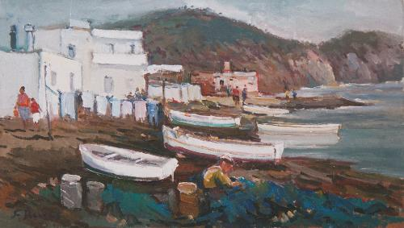
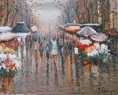
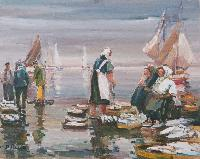

Pintor Artista - Estilo Neoimpresionista
Nació Francisco Reyes en Alcalá de los Gazules, Cádiz. Se define como un pintor autodidacta con una profunda sensibilidad artística desde su infancia. Más adelante cambió de tierras y su entorno pasó a ser olotense (Girona, Cataluña). Dos tierras diferentes y dos luces distintas que han marcado su trayectoria, desarrollando la mayor parte de su carrera expositora en Cataluña.
A través de su pintura describe los paisajes catalanes y andaluces, los pequeños puertos del Mediterráneo, la agreste costa, barcas y yates, así como tierras del interior y espacios abiertos. Es un paisajista y marinista de amplio registro, caracterizado por una obra de alegre cromatismo y una excelente conjugación del color y la luz.
Visión Impresionista: Nos ofrece una visión vibrante y siempre impactante de los temas que le inspiran. Su pincel se mueve nervioso, multiplica manchas, precisa y determina, dejando que la atmósfera y el titileo de la luz adquieran un valor especial en sus telas altamente luminosas.
Maestro del Color: De escuela impresionista, de pintura espontánea y paleta sencilla y colorista, hacen de sus marinas, las Ramblas de Barcelona y temas urbanos, un exponente de la pintura Mediterránea. Todo en sus cuadros es equilibrado, reflejando las costumbres de nuestro litoral con un lenguaje pictórico generoso.
Exposiciones Individuales: Ribes de Freser, Roses, Blanes, Lloret de Mar, Sant Feliu de Guíxols, Terrassa, Banyoles, Cambrils, Sant Joan les Fonts, Torroella de Montgrí, Estartit, Pineda de Mar, Pals, Ampuriabrava, Mojácar, Vera, Toulouse (Francia), Baziege (Francia), Carcassonne (Francia), Colliure (Francia), Barcelona, Olot, Tossa de Mar, Cádiz, Almería, París (Francia), Marbella, San José y Carboneras.
Exposiciones Colectivas: Barcelona, Olot, Tossa de Mar y Toulouse (Francia).
Muchos de sus cuadros se encuentran distribuidos en importantes colecciones privadas de España, Alemania, Francia, Suiza, Bélgica e Inglaterra.
Enlaces de interés y prensa:

Isleta del Moro

Rambla de barcelona

Pescadoras